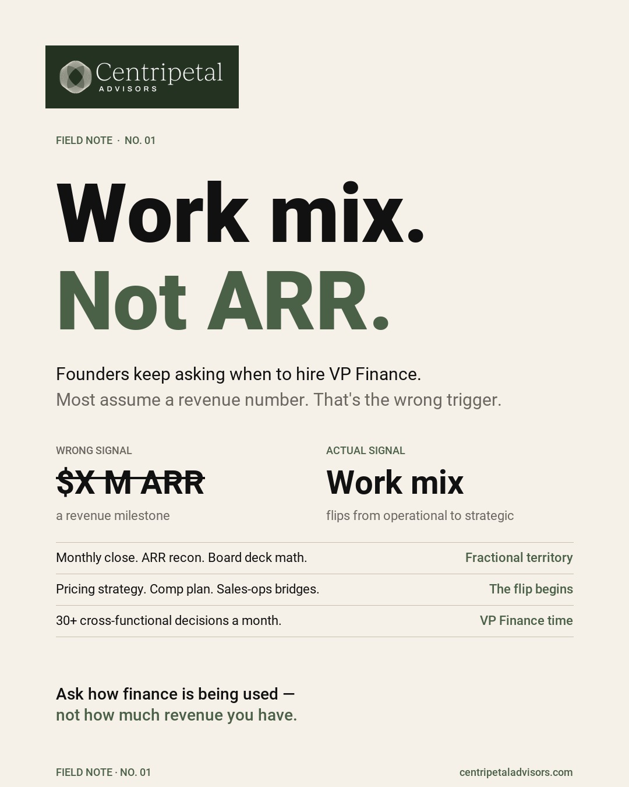

The question beneath the question
Most founders ask "do I need a CFO?" when what they actually need to answer is: "what financial work is not getting done, and what is the cost of that gap?"
The answer is rarely "hire a VP Finance or CFO immediately." More often, it is one of three paths: build internal capacity, bring in fractional support, or hire a VP Finance. The right choice depends on the work, not the title.
When fractional CFO support fits
Fractional CFO engagement makes sense when the highest-value financial work is strategic — cash planning, board reporting, capital decisions, scenario modeling — but the volume does not yet justify a full-time senior finance hire.
A fractional CFO delivers senior financial judgment on a part-time, embedded basis — inside the operating rhythm of the company — at a fraction of the fully loaded cost of a full-time executive with comparable experience. Engagement scope and pricing depend on the company’s stage and needs.
When it stops fitting
The transition point is not a revenue milestone. It is a complexity milestone: multiple entities, covenant compliance, a growing finance team that needs a daily manager, or cross-functional operating cadence that exceeds 20 hours per week of senior financial attention.

At that point, the company needs a full-time owner for the finance function — and the fractional CFO's best final act is helping recruit and onboard that person.
"We always start out with free advice and if there's a relationship and we want to work together, we will probably find a way."
Schedule a Conversation